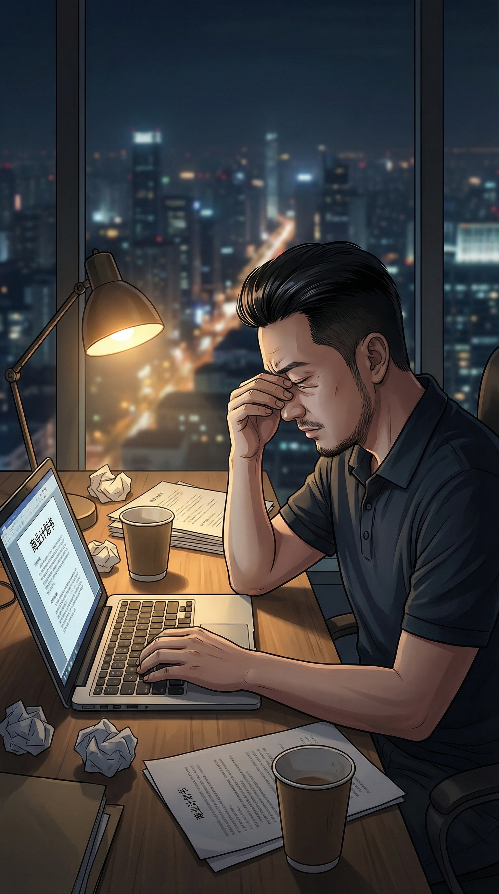
凌晨三点十七分。
我的眼睛已经在BP上来回扫了第六遍，每个字都认识，连在一起就像天书。
融资的事搞得我三天没睡好。投资人比当年的恐怖分子还难对付——至少恐怖分子不会在凌晨两点发微信问你"DAU增长模型能不能再跑一版"。
手机震动。屏幕亮起。
"明天9:00 meeting，BP发一下最新版。"
投资人的消息。我叹了口气，把手机扣在桌上。
兄弟，现在已经是"明天"了。
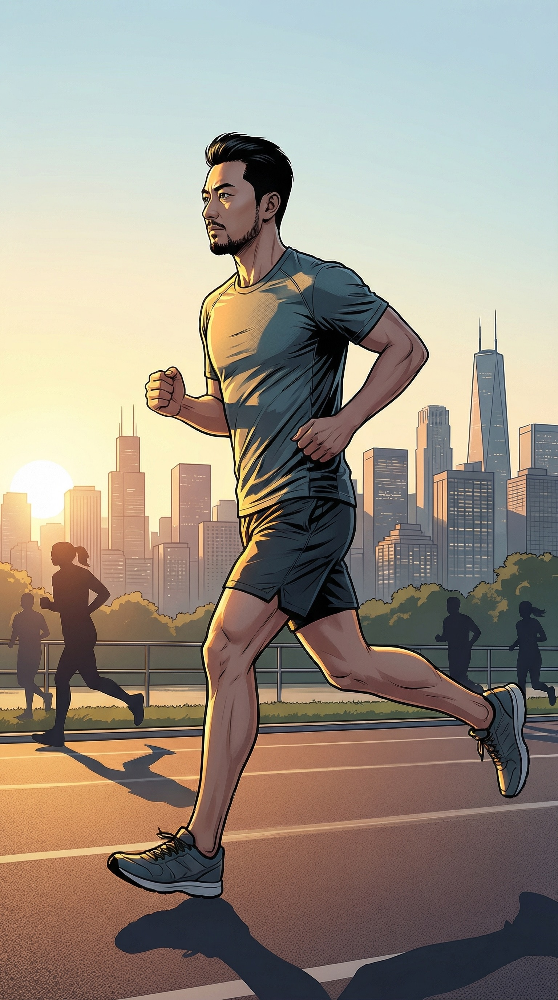
六点。我换了跑鞋出门。
跑步是唯一能让我脑子清空的事，虽然我的步频好像永远改不掉军队时候的节奏——每分钟180步，像刻在DNA里。
有一次林可跟我跑了五分钟，说"你跑步像赶着去执行暗杀任务"。我笑了笑没接话。
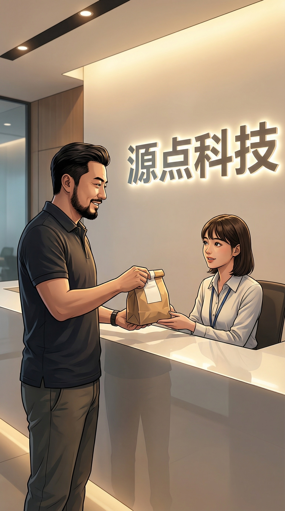
八点。源点科技。
"江哥早！"
前台小刘冲我挥手。我把带的豆浆油条放在她桌上。
"谢谢江哥！每次都是双份油条！"
当老板最重要的一件事——让员工吃饱。这条道理，以前在部队就懂了。
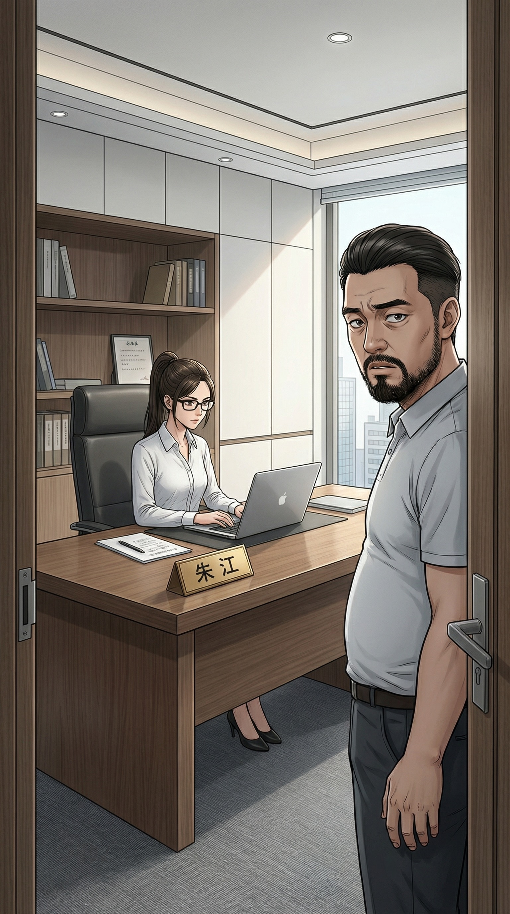
推开办公室的门，林可已经在我位子上坐着了，对着我的电脑噼里啪啦敲代码。
"你的终端配置太丑了，我帮你改了。"
"……这是我的电脑。"
"你的审美不配拥有它。"
CTO霸占CEO的电脑，我估计在任何管理学教材里都没见过这种案例。
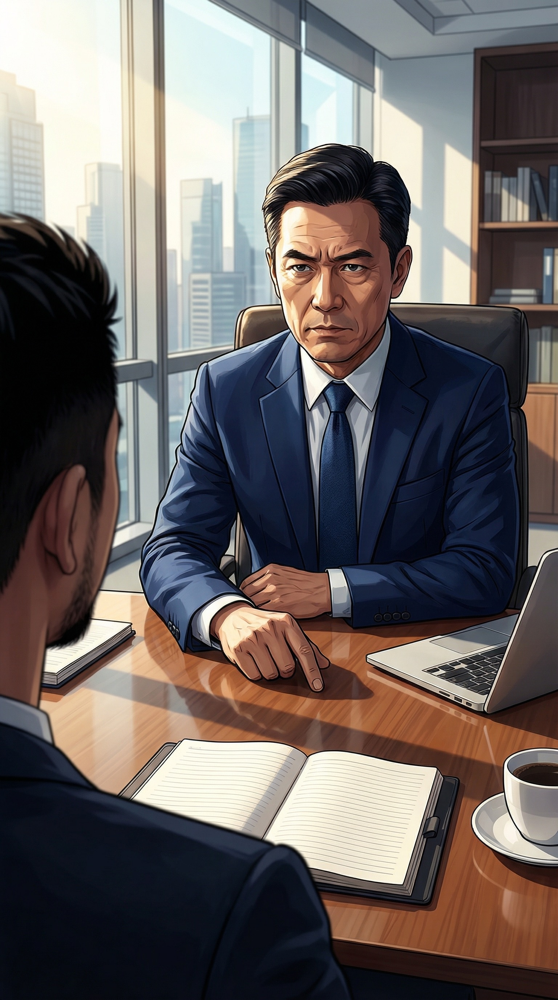
九点整。会议室。
对面坐着的是张总——道源资本的合伙人，西装笔挺，手指有节奏地敲着桌面。
"朱江，你的AI模型壁垒在哪？市面上做大模型的没有一百也有八十。"
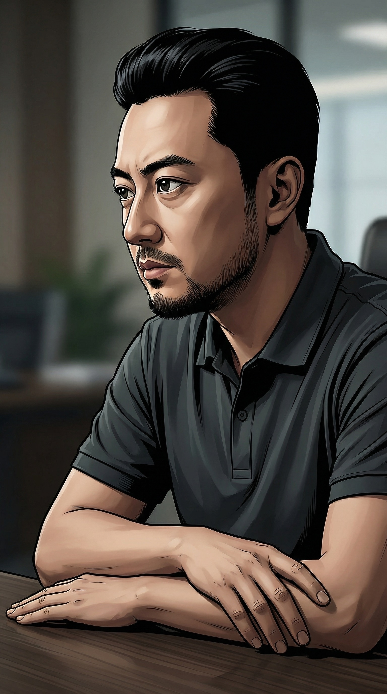
我没急着回答。
他左眼角跳了一下。不明显，但跳了。这是虚张声势的信号——跟审讯室里的表现一模一样。
算了，不能这么想。我现在是CEO，不是审讯官。
但身体的反应比大脑诚实。我已经在0.3秒内完成了对他的评估：紧张，但在装镇定。他需要这笔deal。
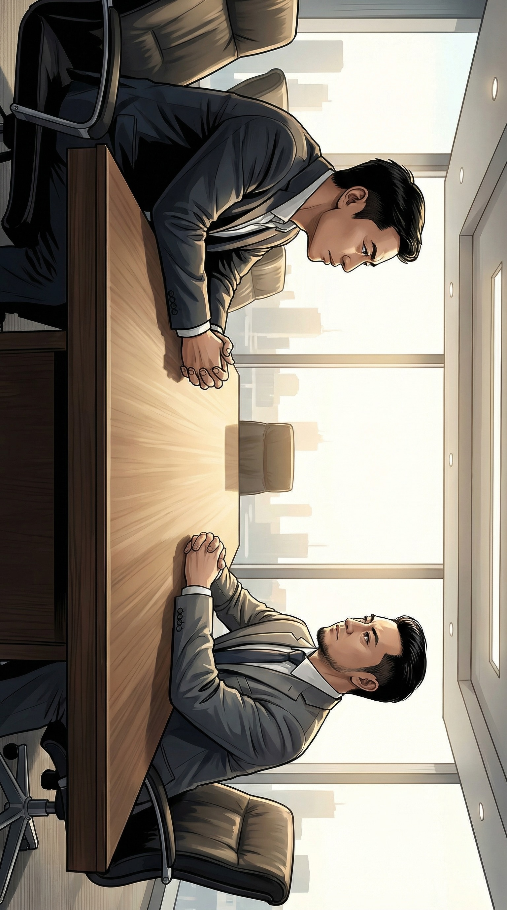
张总亮出了底牌。
"估值我们的意见是压30%。市场环境不好，你应该理解。"
压30%。相当于把源点科技三十个人半年的命，打了七折。
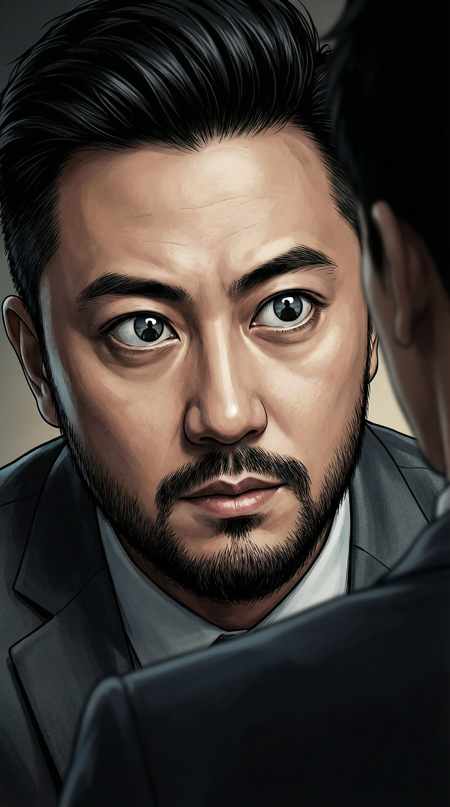
三个选项在脑海里排开——
A：观察-分析-精准反击
先不表态，抛三个问题暴露他的底牌，再一击致命
B：直接拒绝走人
"不缺你这个爷"，展现骨气
C：表面妥协暗中布局
先签term sheet争取时间，同时联系其他投资人制造竞争
✦ 我的选择：A
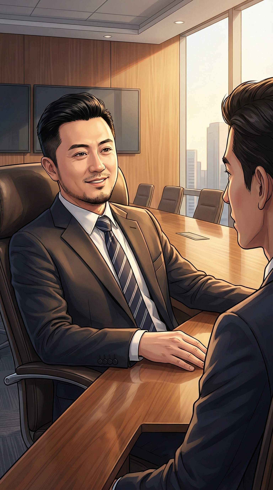
我笑了笑，往后一靠。
"张总，我有三个问题。第一，你们基金这期LP的DPI要求是多少？"
他的手指停了。
"第二，道源上一个AI项目是不是上个月刚撤了？第三——"
我倾身向前。
"——你今天是不是必须带一个项目回去交差？"
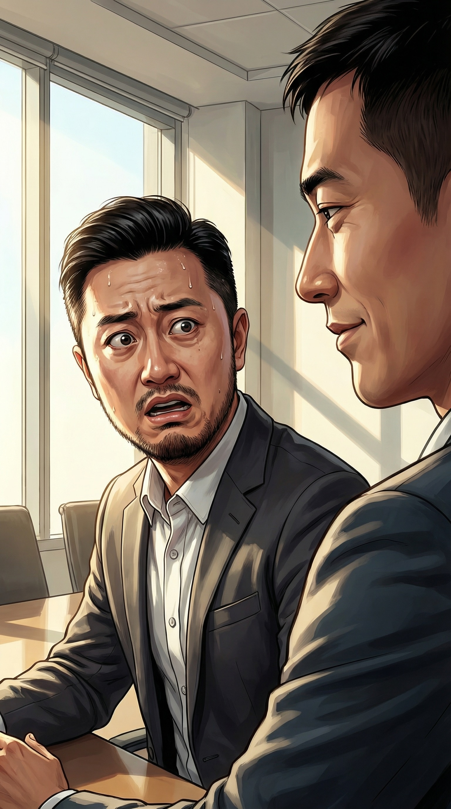
张总的脸色精彩极了——三秒内换了四种表情，比川剧变脸还快。
"……你怎么知道的？"
"我做过情报分析。"
"什么？"
"我说，我做过市场调研。"
差点嘴漏了。
最终估值只压了8%。我很满意。
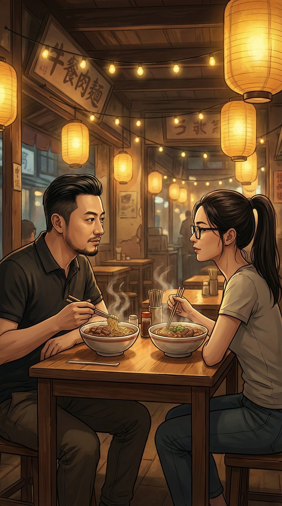
午饭。公司楼下的面馆。
林可坐对面吸着牛肉面，一边看手机一边嘟囔："张总那个表情你录下来没？能当表情包用一年。"
我刚想回她话，手机响了。
一个陌生号码。
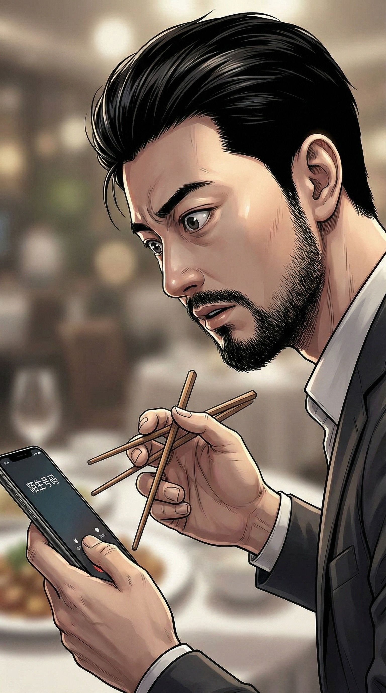
我看到了号码前缀。
手突然僵住了。筷子从指间滑落，"啪"地掉在碗沿上。
这个区号……我已经三年没见过了。031——那是暗影小队专用的通信前缀。
"江哥？你没事吧？"林可放下手机看我。
"没事，手滑了。"
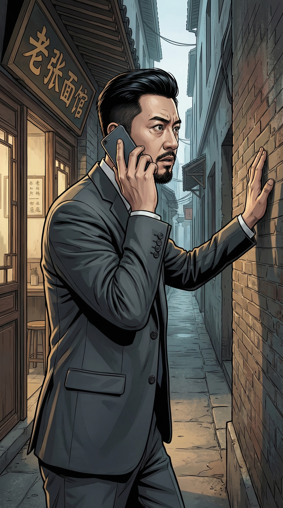
我走出面馆，在巷子口接起了电话。
"棋手，好久不见。"
老陈的声音。低沉、沙哑，像砂纸磨过铁皮。三年了，一点没变。
"有件事，必须当面说。"
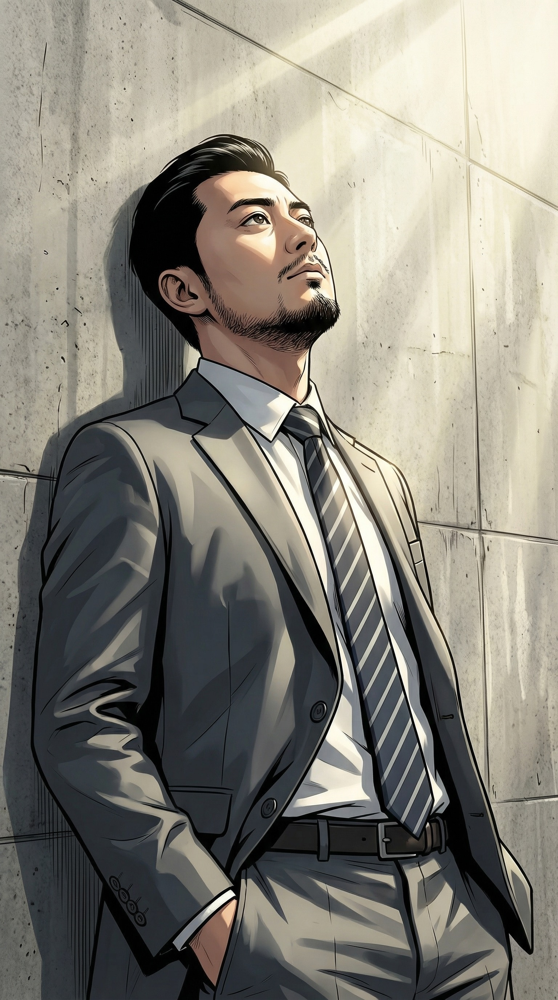
我靠在墙上，仰头看天。
阳光很好。这是一个适合开会、吃面、改BP的普通工作日。
不是适合接到暗影来电的日子。
世界上没有适合接到暗影来电的日子。
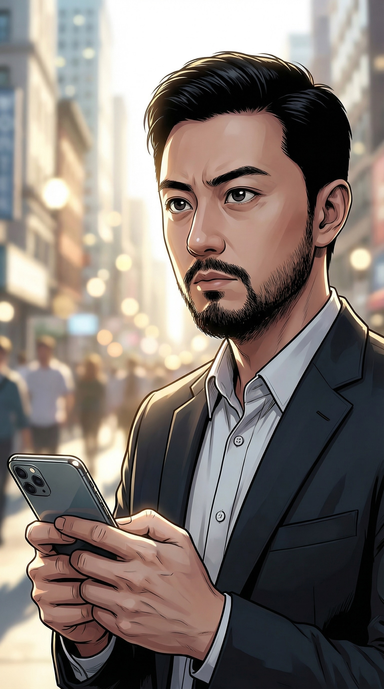
"见面？在哪？"我问。
A：选一个我熟悉的地形
公司对面的咖啡馆，有退路
B：直接去老陈指定的地点
信任老战友
C：先不见面，让林可查老陈近况
创业者的尽调思维
✦ 我的选择：A
信任老陈，但不信任"叫老陈给我打电话"的人。咖啡馆对面就是公司，三秒钟能回到安全区域。
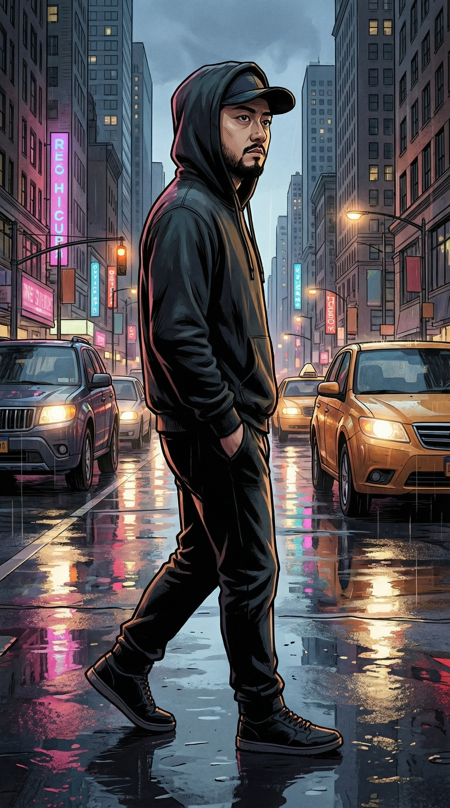
下午两点。我跟林可说有个老朋友要见，提前离开了公司。
换了件连帽卫衣，戴上棒球帽。不是为了耍帅——是习惯。降低辨识度，这是基本功。
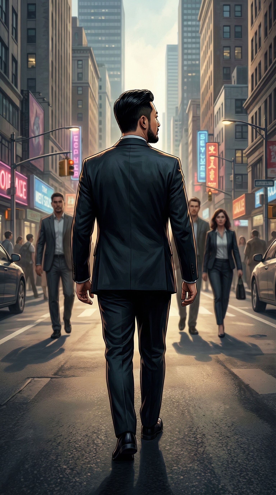
走出公司不到三百米，我就发现了。
后方三个人。两男一女。间距十五米，交替领先。
职业手法。不是街上的小毛贼，是受过训练的。
我的心跳从72瞬间蹦到110。不是恐惧——是兴奋。
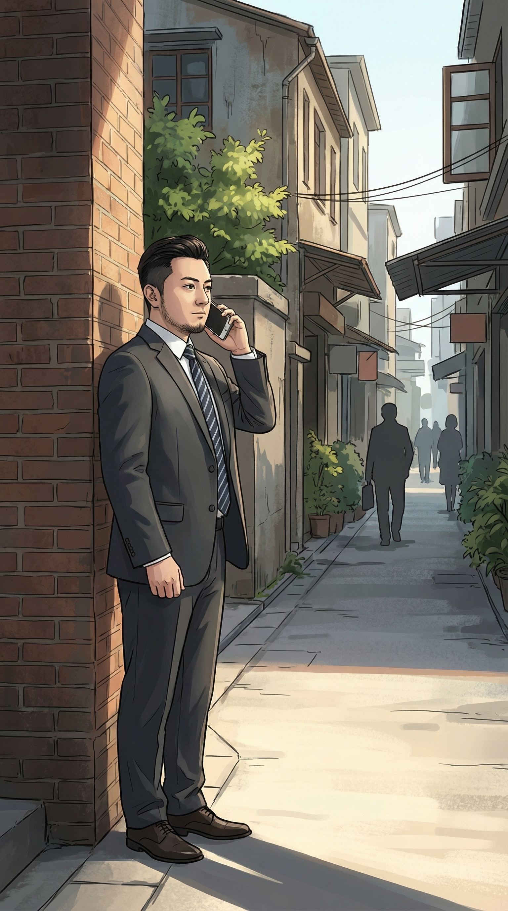
我掏出手机假装接电话，自然地拐进了一条小路。
如果是巧合，他们会直走。如果不是——
十秒后，那个穿灰色风衣的男人也拐了进来。
不是巧合。
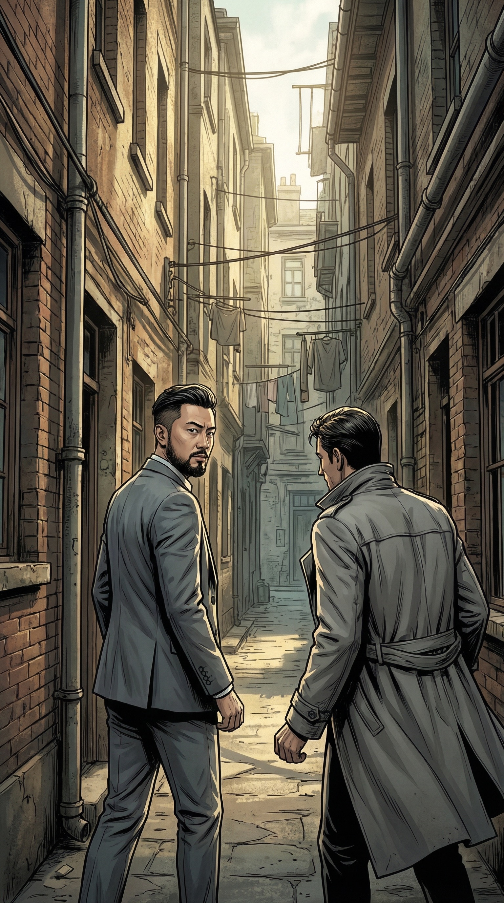
连续变换了三次路线。每一次，他们都跟上来了。配合默契，像编排好的舞蹈。
业务水平不错。至少是专业安保级别。但比起当年暗影的跟踪训练——差了两个档次。
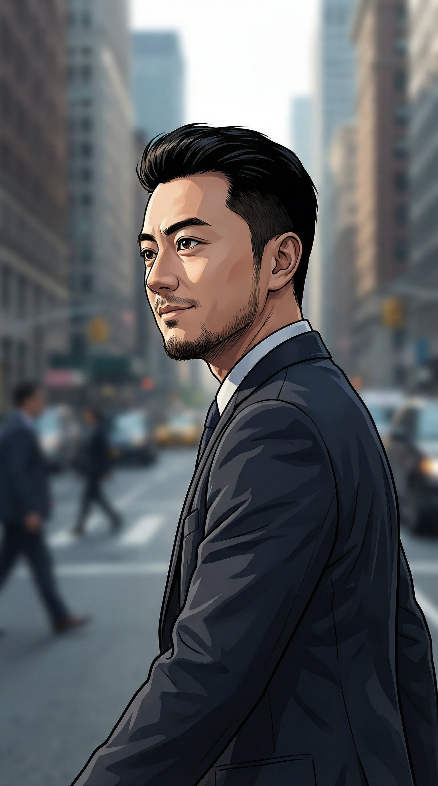
我深呼吸了一下。
该死。我已经退役三年了。心跳怎么还会因为这种事——
兴奋。
这不对。一个正常的CEO遇到跟踪应该害怕，不应该觉得手痒。
朱江你冷静一点。你现在是企业家。企业家。
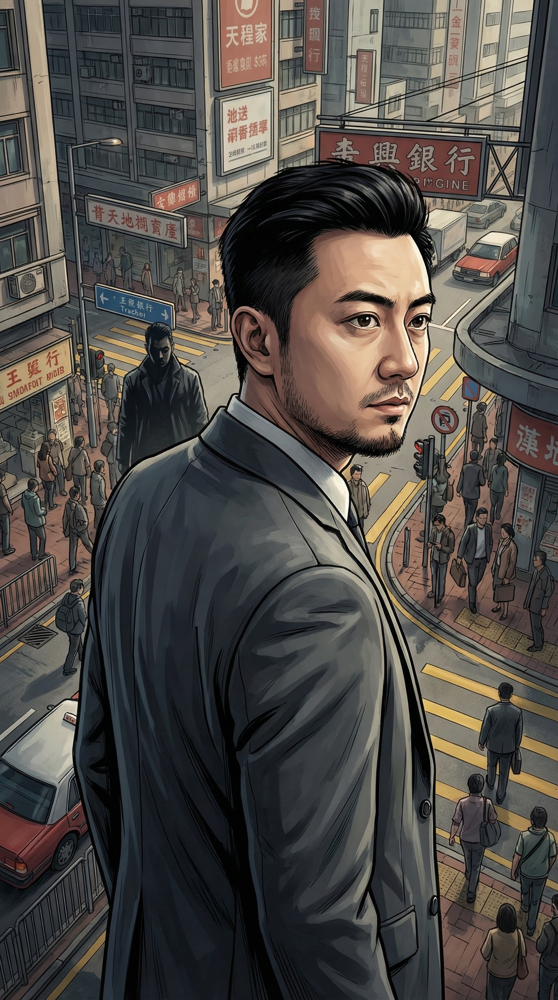
怎么处理？
A：走进商场，拍照发给老陈
创业者方式，让别人处理
B：甩掉他们
利用地形脱离
C：主动制造接触
假装"不小心"撞到其中一个，近距离观察
✦ 我的选择：C
先收集信息。不知道对手是谁，甩掉了也没用——他们会再来。不如先弄清楚他们的底。
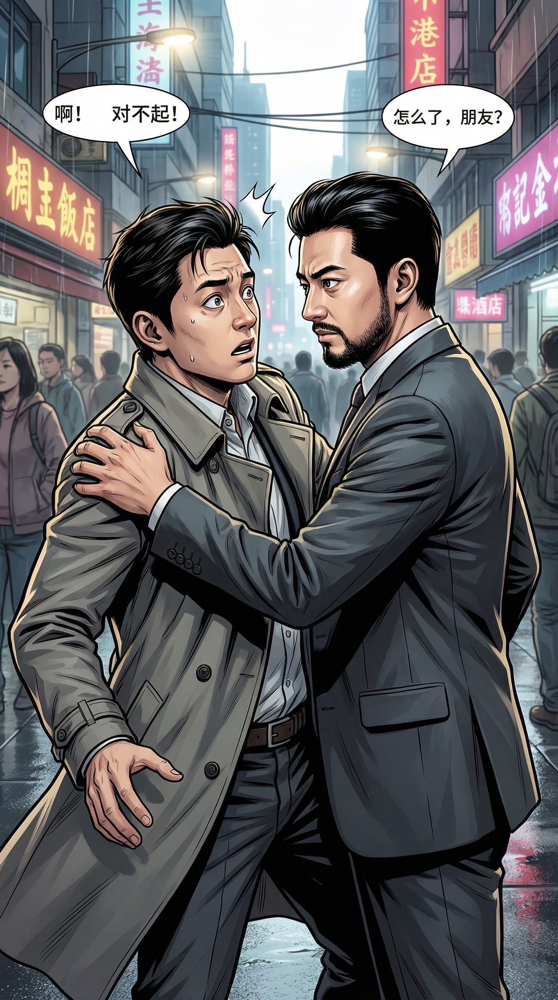
我突然停下来，假装看手机。
灰风衣男没来得及减速，差点撞上我。我顺势一个侧身，手搭上了他的肩膀。
"哥们，不好意思——"
左腋下有硬物。枪。右手虎口有茧——射击茧。腰带加厚——可能藏了匕首。
0.5秒。我摸清了他身上三件武器。
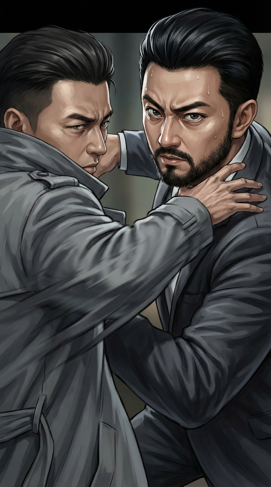
但意外发生了。
灰风衣男的眼神变了。他认出了我的手法——不是普通人的搭肩动作。
他的右手像蛇一样抽出，直奔我的喉咙。
不好。他判断我是威胁，直接进入攻击模式。
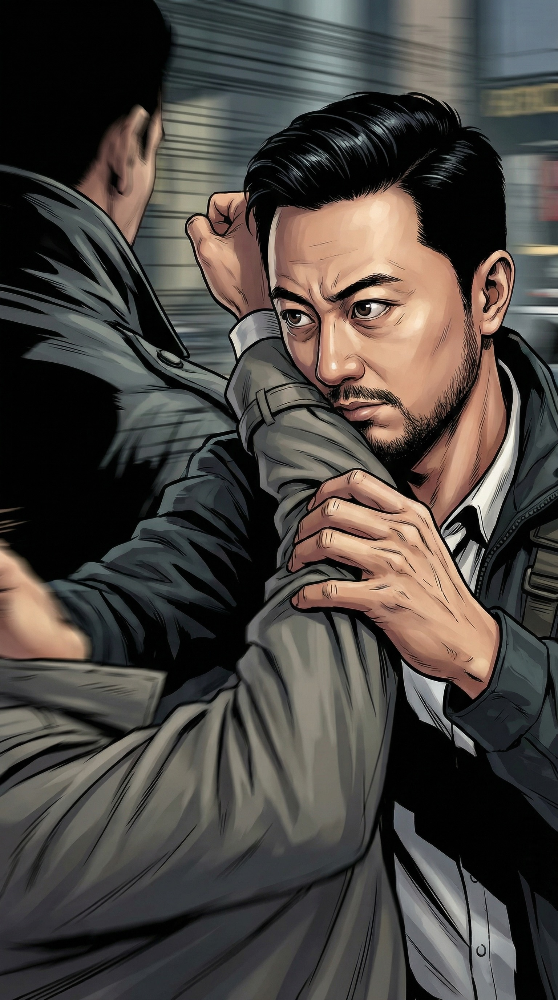
身体比大脑先动了。
侧头，避开手刀。左手抓住他的手腕外翻，右脚卡进他的重心线，肩膀一送——
标准的擒拿动作。三秒完成。
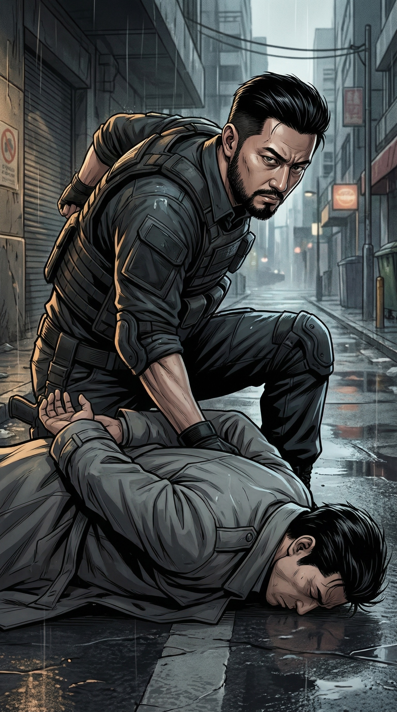
灰风衣男的脸贴在了地面上。我的膝盖压着他的背，把他的手臂反锁在身后。
我发誓我只是想拦一下。
但三年前的肌肉记忆不同意。
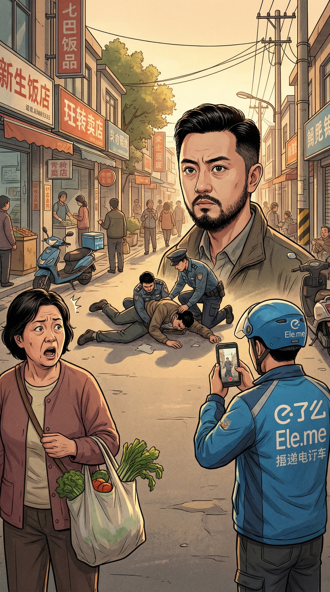
路过的大妈停下了脚步，手里的菜差点掉了。
一个外卖小哥掏出手机就要拍。
完了。要是上了抖音，我的B轮融资可以直接作废。标题大概是："AI公司CEO街头暴打路人，投资人连夜撤资"。
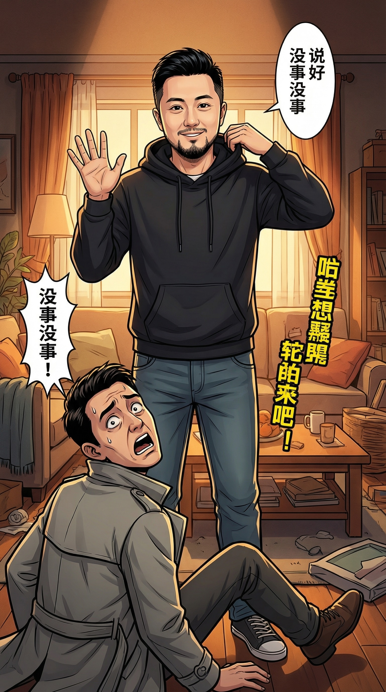
我赶紧松手，站起来整理衣服，摆出最无害的笑容。
"不好意思不好意思，朋友之间闹着玩，闹着玩……"
灰风衣男从地上爬起来，看我的眼神像看到了鬼。
这要是被林可知道了，她肯定说我cosplay杰森·伯恩。
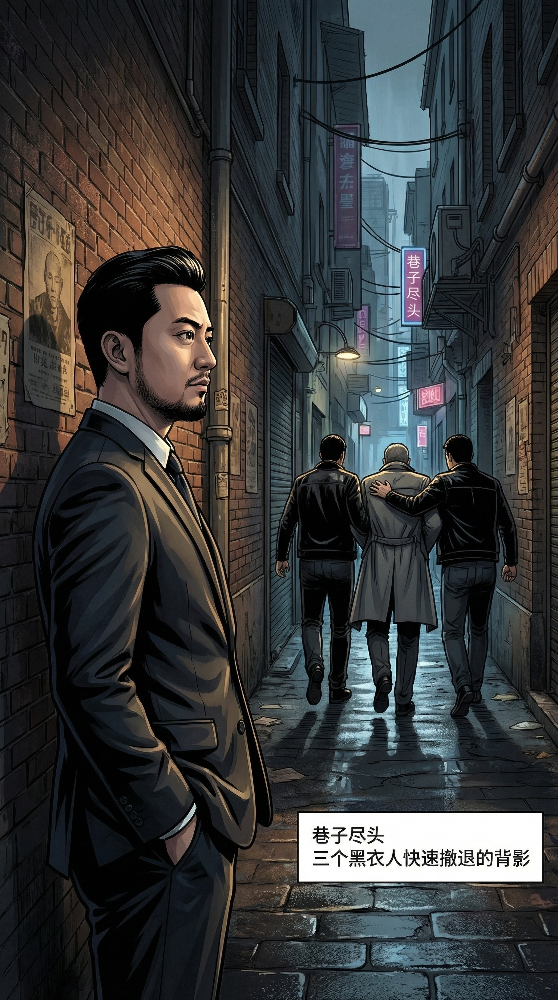
另外两个人迅速上前架走了灰风衣男。三人消失在巷子尽头。
专业。撤退动作干净利落。
不是普通安保。军方背景的概率超过70%。
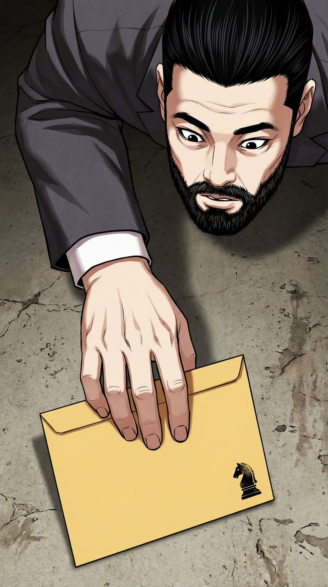
我低头。灰风衣男趴着的位置，地上掉了一个东西。
黄色信封。没有署名，没有邮戳。
但信封的右下角，印着一个极小的标记——一枚棋子。
"棋手"。这是给我的。
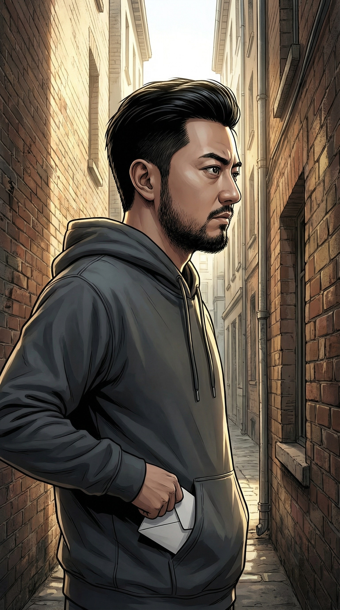
我把信封揣进衣兜。
手指在抖。不是害怕。是我花了三年试图埋葬的东西，被人挖了出来。
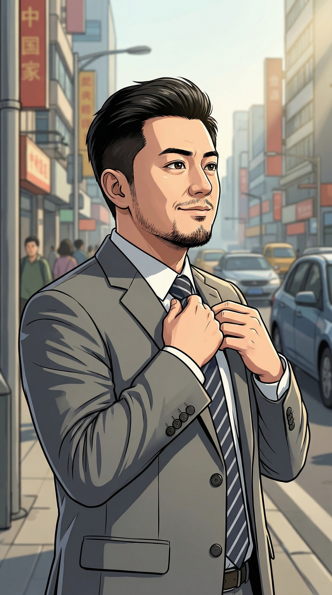
深呼吸。整理卫衣。
好消息：我的格斗技术三年没退化。
坏消息：我现在可能上了某个机构的监控名单。
更坏的消息：我迟到了，咖啡要凉了。
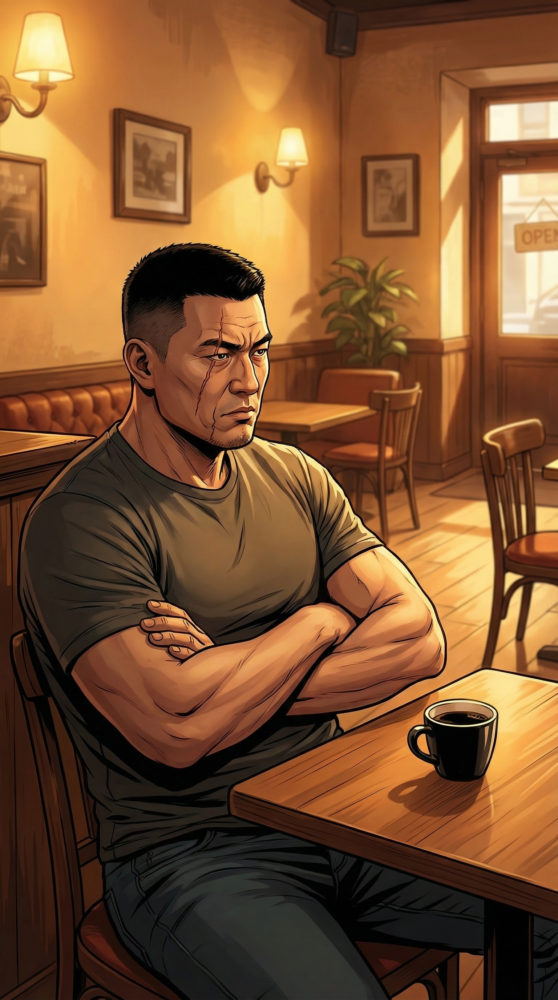
咖啡馆。角落的位置。
老陈已经在了。板寸头，左脸一道疤从眉角划到下巴。三年了，头发白了不少，但眼神还是那么锐。
"棋手。"
"老陈。"
我坐下。把信封放在桌上。
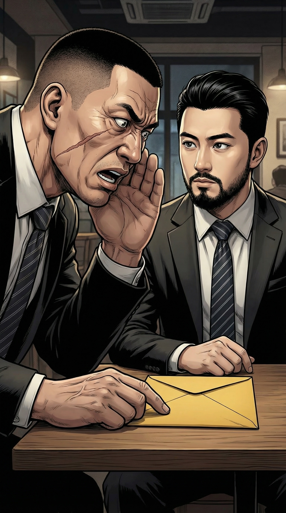
老陈看到信封的瞬间，脸色变了。
"他们已经找到你了？比我想的快。"
他压低声音，身体前倾。
"暗影小队的人——三年前那次任务——有人没死。"
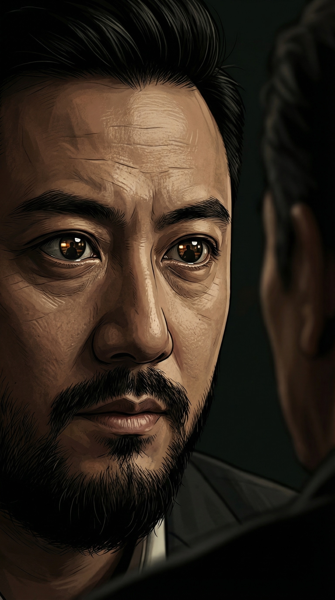
A："告诉我所有事"
直面过去
B："我已经退役了"
保护现在的生活
C："先说清楚，是谁在跟踪我"
先搞清全局再决定
✦ 我的选择：C
信息优先。先弄清整个棋盘上有哪些棋子，再决定我要不要重新入局。
我以为创业就是我的新战场。
看来……旧战场还没有结束。
暗影创业者 · V5沉浸式
信封里藏着三年前那次任务的真相。而那个"没死"的人，正在这座城市里看着我。
我需要做一个选择——是继续当CEO假装一切没发生过，还是重新拿起那把我以为已经放下的枪。